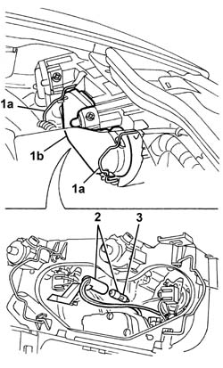

5540B26 BULB (ONE) FOR SIDE LIGHTS OF ONE HEADLAMP/LIGHT CLUSTER, L/H OR R/H - R+R
- Path
- Procedures > 55 ELECTRICAL EQUIPMENT > 5540 EXTERIOR LIGHTING > 5540B HEADLAMPS > 5540B26 BULB (ONE) FOR SIDE LIGHTS OF ONE HEADLAMP/LIGHT CLUSTER, L/H OR R/H - R+R
- Kind
- repair procedure (removal / refitting; the operation number is the code)
- Applies to
- all engines; all production periods
- Interactive page
- https://sloeber94.github.io/elrnDB-aGt/en/#/125001667
Applies to: all engines; all production periods
 Removing
Removing
 Refitting
Refitting- Open the bonnet.
- Disconnect the negative battery terminal.
- Release the retainers (1a) and remove the cover (1b).
- Release the bulb holder and bulb from the housing.
- Extract the bulb from the bulb holder (bayonet fitting).

Applies to: all engines; all production periods
Refitting
Removing- Check the condition of the bulb and make sure that it is clean.
- Fit the bulb in the bulb holder.
- Fit the bulb holder and bulb in the housing.
- Position the cover and attach the retainers.
- Connect the negative battery terminal.
- Close the bonnet.
- Check that the bulb is working.